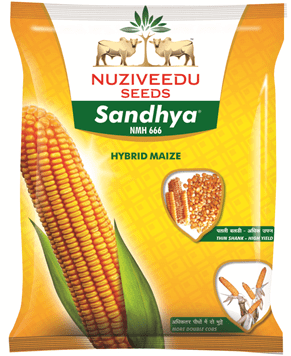

This hybrid is suitable for high density planting and zero tillage cultivation
| Morphological Characters | |
|---|---|
| Plant Height (cm) | 90 - 95 |
| Days to maturity: | 120-125 |
| Grain type: | Medium Slender |
| Suitability: | Kharif & Rabi |
| Maturity | Kharif: 105-110 days, Rabi:115-120 days |
| Recommended Areas for Cultivation | Coastal Andhra & Bihar |
Special Features / USPs:
|
|